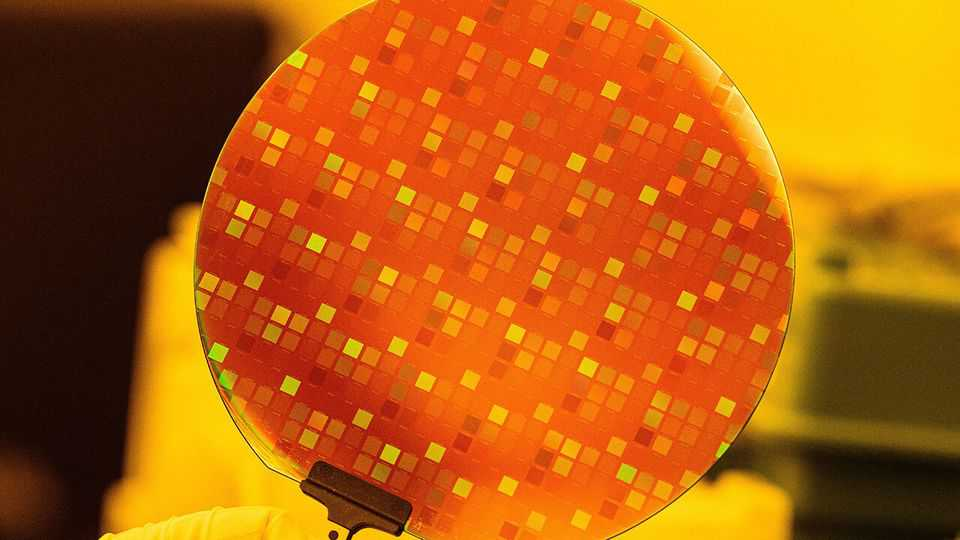

The trickle-down economics of the AI boom
How fast are AI investments translating into broader gains? Taiwan and South Korea offer hints

Sep 17th 2026
WHAT IS AI good for? If polls of Americans are anything to go by, not much. A large majority oppose the building of artificial-intelligence data centres in their backyards. Nearly as many dislike the technology in general, fearing it may cost them their job or even humanity its future. Boosters retort that even before AI turbocharges productivity, as it promises to do, the data-centre investment boom is fuelling economic growth. And those benefits, the argument goes, trickle down to everyone, not just a handful of tech plutocrats.
In America, any early effects are likely to be diluted by the economy’s vastness and variegation. Better places to look for hints of trickle-down chiponomics are South Korea, the world leader in advanced memory chips necessary to manage machine-learning workloads, and Taiwan, the global powerhouse in all other AI silicon.
The AI bonanza is already evident in the two countries’ headline statistics. Swelling exports have lifted annual GDP growth in South Korea to a brisk 4% or so and to a blistering 12% in Taiwan. Private consumption, which was stagnant a year ago, is accelerating (see chart 1). In the second quarter of this year it accounted for around a fifth of the increase in Taiwanese GDP and roughly a third of South Korea’s.

The economic windfall is most obvious in Taiwan. TSMC, the national champion which manufactures nearly all of the world’s AI chips, increased production from 10m standard silicon wafers in 2019 to 15m last year. Its capital expenditure rose even faster in that period, from $15bn to $41bn. This has helped push up Taiwanese real fixed capital formation by nearly 40% since late 2023.
Resources are pouring into the semiconductor supply chain. The share of Taiwanese employees making electronic components or computers is nearly 11%, the highest since 2016. Pay rose first in Taiwan’s electronics sector, but since 2024 rises have spread across the workforce. Average nominal wages are now growing at 3% a year in Taiwan, compared with a pre-pandemic trend of 1.9%. Paul Cavey of East Asia Econ, a consultancy, points to the “Balassa-Samuelson effect”, an economic phenomenon whereby high productivity in an industry producing tradable goods bids up the cost of labour across the board.
The government, for its part, is preparing to spend the swelling tax take from its silicon goose on handouts. Social-welfare spending is set to rise by 40% in 2027. Last month Lai Ching-te, the president, proposed giving all Taiwanese citizens an “AI dividend” of around $300, at a total cost of $7bn (or around 6% of projected revenue). A new child benefit is in the works, too.
Things are less clear-cut in South Korea. That is chiefly because demand for South Korean silicon increased all of a sudden, rather than gradually. Between 2023 and 2025, as prices of notoriously cyclical memory chips initially fell after a pandemic-era craze for electronics faded, Samsung Electronics, South Korea’s biggest chipmaker, actually trimmed its capital expenditure. SK Hynix, Samsung’s main rival, tripled its spending in that period, but from a relatively piddling $6bn a year.
The government-backed $500bn investment plan both firms have now signed up to has yet to be reflected in their outlays. In the past three years or so real fixed capital formation has risen by just 3%.
Most of the past year’s rise in exports has thus come not from higher volumes, as in Taiwan, but from much higher prices. Economy-wide export prices have risen 57% over the past year in South Korea. Immediate benefits are therefore limited to the less than 1% of South Korean workers who toil in the chip industry and the shareholders of the memory duo and their suppliers (plus, indirectly, to the businesses which cater to the lucky few).

In nominal terms, average annual wage growth across the economy has fallen below the pre-pandemic pace of 3.5% (see chart 2). The “wealth effect”, whereby a stock-market rally makes share-owning consumers feel flush and spend more, is also muted. Although South Korea’s KOSPI stock-market has more than doubled in value since 2023, a study by South Korea’s central bank estimates that a dollar in equity gains translates to just one extra cent of consumer spending, compared with five cents, plus or minus, for stock-loving American households.
South Korea’s government is also stingier. Despite projections of a 50% rise in tax revenue in 2027, it is not planning to shower citizens with cash. Some 70% of the windfall will be saved, reckons Capital Economics, a consultancy. The money will mostly be channelled towards deficit reduction and a new Future Response Fund for long-term investments.
As Samsung and SK Hynix ratchet up their investments, production will increase. This should fuel demand for labour and eventually lift wages for everyone, as happened in Taiwan. Mr Cavey likens South Korea to Australia in 2003-11, when a commodity boom led to a lasting uptick in mining investments that eventually translated into broad economic benefits. The South Korean government’s planned investments in infrastructure and education may also yield productivity gains that Taiwan’s cash handouts would not. The effects of such policies will not be as quick. But they may prove more durable.■